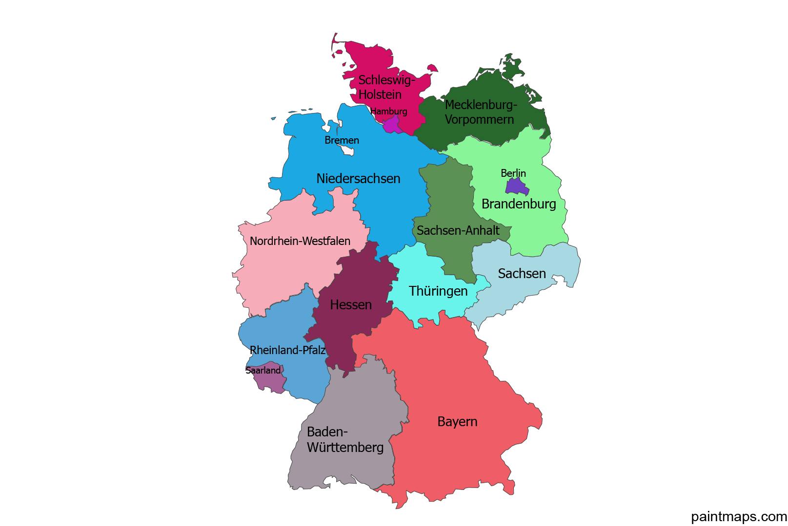
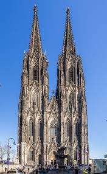
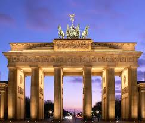
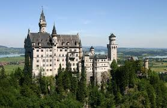

Almanya
Başkent: Berlin
Yüzölçümü: 357.022 km²
Nüfus: Yaklaşık 83 milyon
Para Birimi: Euro (EUR)
Almanya, Avrupa'nın kalbinde yer alan güçlü bir ekonomik ve kültürel merkezdir. Dünya çapında güçlü bir sanayiye, mühendislik ve teknoloji alanındaki yeniliklere sahip olan Almanya, aynı zamanda tarihsel ve kültürel mirasıyla ünlüdür. Berlin, Almanya'nın başkenti olup, modern sanat galerileri, tarihi anıtlar ve dinamik gece hayatı ile tanınır. Ülkede, geleneksel Alman yemeklerinin yanı sıra, Oktoberfest gibi uluslararası ünlü festivaller de düzenlenmektedir.

İklim ve Coğrafya
İklim: Almanya'nın iklimi, büyük ölçüde ılıman okyanus iklimi etkisi altındadır. Ülke, genellikle nemli ve ılımandır, ancak yerel farklar gösterir. Kuzeydeki bölgelerde kışlar daha soğuk ve yağışlı geçerken, yaz aylarında sıcaklık genellikle 20°C civarlarında olur. Güneyde ise, Almanya'nın Alpler'e yakın bölgelerinde daha soğuk kışlar ve sıcak yazlar görülebilir.
Coğrafya: Almanya, Orta Avrupa'da yer alır ve farklı coğrafi özelliklere sahiptir. Kuzeyde denize kıyısı bulunan Almanya'nın bu bölgesi, daha düz arazilerle kaplıdır. Almanya'nın güneyindeki Alpler, ülkenin en yüksek noktalarını oluşturur ve dağlık bir yapıya sahiptir. Ülkede çok sayıda nehir ve göl bulunmaktadır. Özellikle Ren Nehri, Almanya'nın en uzun nehri olup, ticaret açısından büyük bir öneme sahiptir.
Tarihi Gelişmeler
Almanya'nın tarihi, Avrupa'nın kaderini şekillendiren pek çok önemli olayla doludur. Orta Çağ'da Kutsal Roma Cermen İmparatorluğu'nun merkezi konumundaydı. 19. yüzyılda Otto von Bismarck’ın liderliğinde Almanya birliğini sağladı ve modern Almanya'nın temelleri atıldı.
20. yüzyılda Almanya, iki dünya savaşında da merkezi bir rol oynadı. I. Dünya Savaşı'nın ardından Weimar Cumhuriyeti kuruldu, fakat ekonomik zorluklar ve siyasi istikrarsızlık, Nazi rejiminin yükselmesine zemin hazırladı. II. Dünya Savaşı'ndan sonra Almanya, Doğu ve Batı olarak ikiye ayrıldı.
1990 yılında Berlin Duvarı'nın yıkılması ile Almanya yeniden birleşti. Bugün Almanya, Avrupa Birliği'nin kurucu üyelerinden biri olarak güçlü bir demokrasi ve ekonomik güç haline gelmiştir.
Oktoberfest:
Münih’te her yıl düzenlenen Oktoberfest, dünyanın en büyük bira festivalidir. Yöresel kıyafetler, devasa bira çadırları, geleneksel müzikler ve Alman mutfağından lezzetlerle süslenen bu etkinlik, Almanya'nın kültürel kimliğinin simgelerinden biridir.

Noel Pazarları:
Almanya’da Aralık ayı boyunca kurulan Noel pazarları, sıcak şarap, el yapımı süsler, oyuncaklar ve yerel yiyeceklerle doludur. Bu pazarlar, geleneksel Noel atmosferini yaşatır ve şehir meydanlarını ışıl ışıl süsler.

Fırın Kültürü:
Almanya’da fırın kültürü çok köklüdür. Ülke genelinde 300’den fazla farklı ekmek çeşidi bulunur. Sabahları fırından taze alınan ekmekle yapılan kahvaltılar Alman yaşamının önemli bir parçasıdır.


Köln Katedrali - Almanya
Almanya'nın en büyük katedrali olan Köln Katedrali, Gotik mimarinin muazzam bir örneğidir. 1248 yılında inşasına başlanan katedral, 1880 yılında tamamlanmıştır. UNESCO Dünya Mirası Listesi'nde yer alan bu yapı, şehre gelen turistler için önemli bir cazibe merkezidir.

Berlin Duvarı - Almanya
Berlin Duvarı, 1961 ile 1989 yılları arasında Almanya'nın başkenti Berlin'i ikiye bölen tarihi bir yapıdır. Soğuk Savaş dönemi boyunca Doğu Almanya ile Batı Almanya arasında bir sınır işlevi görmüştür. Günümüzde duvarın kalan parçaları, dünya çapında özgürlük ve birleşmenin sembollerinden biri olarak kabul edilir.

Neuschwanstein Şatosu - Almanya
Almanya'nın Bavyera bölgesinde yer alan Neuschwanstein Şatosu, masal gibi mimarisiyle ünlüdür. 19. yüzyılda Bavyera Kralı II. Ludwig tarafından inşa ettirilen şato, Walt Disney'in "Uyuyan Güzel" masalındaki şatoya ilham kaynağı olmuştur. Dağların zirvesine inşa edilmiş olan bu şato, Almanya'nın en çok ziyaret edilen turistik yerlerinden biridir.